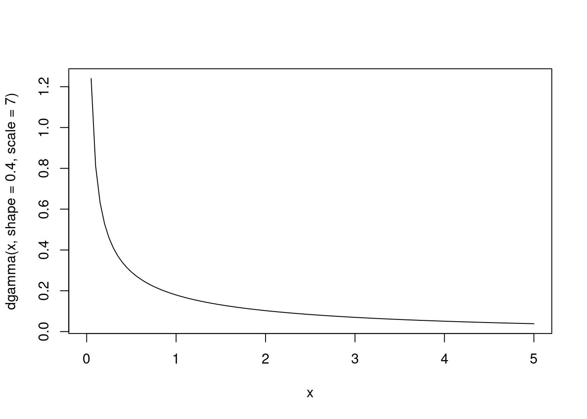
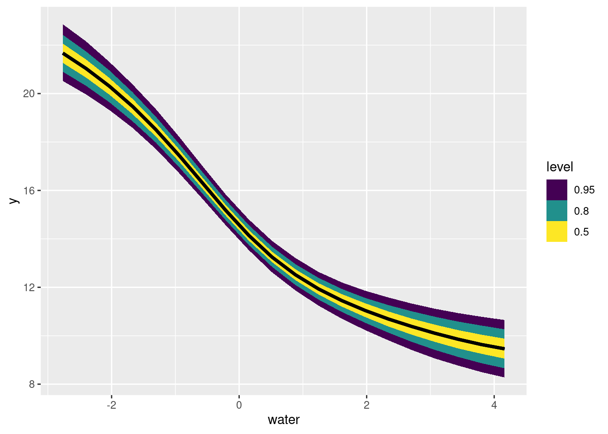

suppressPackageStartupMessages(library(tidyverse))
suppressPackageStartupMessages(library(rstanarm))
library(tidybayes)
data(mite, package = "vegan")
data("mite.env", package = "vegan")
data("mite.xy", package = "vegan")Logistic GLMs: mite responses to water
We’ve already looked at univariate models. When we fit the same model to multiple different groups, we don’t expect the same values for all the coefficients. Each unit in our experiment we are studying will respond to the same variable in different ways.
Hierarchical models represent a way to model this variation, in ways that range from simple to complex.
Before we dive in with hierarchical structure, let’s build a bridge between these two approaches.
This is useful to help us understand what a hierarchical model does.
However it is also useful from a strict model-building perspective – so useful that Andrew Gelman calls it a “Secret Weapon”
Loading models and data
And some quick data restructuring to combine both.
# combine data and environment
mite_data_long <- bind_cols(mite.env, mite) |>
pivot_longer(Brachy:Trimalc2, names_to = "spp", values_to = "abd")To keep things simple and univariate, let’s consider only water concentration as an independent variable.
First, a quick word about centering and scaling a predictor variable:
- I center the predictor by subtracting the mean. This changes the intercept of my linear predictor. it becomes the mean log-odds of occurrance when the water content is average
- I divide water content by 100. The dataset has units of grams per Litre of water (see
?vegan::mite.envfor more details). This is fine, but I don’t think mites are able to sense differences as precise as a millimeter of water either way. by dividing by 10 I transform this into centilitres, which is more informative.
mite_data_long_transformed <- mite_data_long |>
mutate(presabs = as.numeric(abd>0),
# center predictors
water = (WatrCont - mean(WatrCont)) / 100
)
mite_data_long_transformed |>
ggplot(aes(x = water, y = presabs)) +
geom_point() +
stat_smooth(method = "glm", method.args = list(family = "binomial")) +
facet_wrap(~spp)`geom_smooth()` using formula = 'y ~ x'
some things to notice about this figure:
- the x-axis scale has been transformed from “grams per litre” to “centilitres away from average
- there is a ton of variation in how different species respond to water!
mite_many_glms <- mite_data_long_transformed |>
nest_by(spp) |>
mutate(logistic_regressions = list(
glm(presabs ~ water,
family = "binomial",
data = data))) |>
mutate(coefs = list(broom::tidy(logistic_regressions)))
mite_many_glms <- mite_data_long_transformed |>
nest_by(spp) |>
mutate(logistic_regressions = list(
glm(presabs ~ 1 + water,
family = binomial(link = "logit"),
data = data)
)) |>
mutate(coefs = list(broom::tidy(logistic_regressions)))
broom::tidy(mite_many_glms$logistic_regressions[[5]])# A tibble: 2 × 5
term estimate std.error statistic p.value
<chr> <dbl> <dbl> <dbl> <dbl>
1 (Intercept) -0.644 0.353 -1.82 0.0684
2 water -1.82 0.446 -4.08 0.0000450broom::glance(mite_many_glms$logistic_regressions[[5]])# A tibble: 1 × 8
null.deviance df.null logLik AIC BIC deviance df.residual nobs
<dbl> <int> <dbl> <dbl> <dbl> <dbl> <int> <int>
1 95.6 69 -28.3 60.6 65.1 56.6 68 70mite_many_glms$coefs[[5]]# A tibble: 2 × 5
term estimate std.error statistic p.value
<chr> <dbl> <dbl> <dbl> <dbl>
1 (Intercept) -0.644 0.353 -1.82 0.0684
2 water -1.82 0.446 -4.08 0.0000450
Split-Apply-Combine
To explore this kind of thinking, we are going to use an approach sometimes called “split-apply-combine”
There are many possible ways to do this in practice. We are using a technique here from the tidyverse, which you can read more about.
mite_many_glm_coefs <- mite_many_glms |>
select(-data, -logistic_regressions) |>
unnest(coefs)
mite_many_glm_coefs |>
ggplot(aes(x = estimate, y = spp,
xmin = estimate - std.error,
xmax = estimate + std.error)) +
geom_pointrange() +
facet_wrap(~term, scales = "free")
As you can see, some of these estimates are high, others low. We could also plot these as histograms to see this distribution.
mite_many_glm_coefs |>
ggplot(aes(x = estimate)) +
geom_histogram(binwidth = .5) +
facet_wrap(~term, scales = "free")
Once again, the two parameters of this model represent:
- Intercept The probability (in log-odds) of a species being present at the average water concentration. some species are common, others are rare.
- water this is the change in probability (in log-odds) as water increases by one centilitre per litre of substrate.
Modelling multiple slopes in rstanarm
mite_data_long_transformed |> glimpse()Rows: 2,450
Columns: 9
$ SubsDens <dbl> 39.18, 39.18, 39.18, 39.18, 39.18, 39.18, 39.18, 39.18, 39.1…
$ WatrCont <dbl> 350.15, 350.15, 350.15, 350.15, 350.15, 350.15, 350.15, 350.…
$ Substrate <fct> Sphagn1, Sphagn1, Sphagn1, Sphagn1, Sphagn1, Sphagn1, Sphagn…
$ Shrub <ord> Few, Few, Few, Few, Few, Few, Few, Few, Few, Few, Few, Few, …
$ Topo <fct> Hummock, Hummock, Hummock, Hummock, Hummock, Hummock, Hummoc…
$ spp <chr> "Brachy", "PHTH", "HPAV", "RARD", "SSTR", "Protopl", "MEGR",…
$ abd <int> 17, 5, 5, 3, 2, 1, 4, 2, 2, 1, 4, 1, 17, 4, 9, 50, 3, 1, 1, …
$ presabs <dbl> 1, 1, 1, 1, 1, 1, 1, 1, 1, 1, 1, 1, 1, 1, 1, 1, 1, 1, 1, 1, …
$ water <dbl> -0.6048571, -0.6048571, -0.6048571, -0.6048571, -0.6048571, …mite_slopes_corr_stan <- stan_glmer(
presabs ~ 1 + water + (1 + water | spp),
family = binomial(link = "logit"),
data = mite_data_long_transformed,
# priors
prior = normal(0, .2),
prior_intercept = normal(-.2, .5),
prior_covariance = decov(
regularization = 2,
concentration = 1,
shape = .4,
scale = 1),
chains = 4,
cores = 4,
iter = 2000,
refresh = 0
)
summary(mite_slopes_corr_stan)
Model Info:
function: stan_glmer
family: binomial [logit]
formula: presabs ~ 1 + water + (1 + water | spp)
algorithm: sampling
sample: 4000 (posterior sample size)
priors: see help('prior_summary')
observations: 2450
groups: spp (35)
Estimates:
mean sd 10% 50% 90%
(Intercept) -0.3 0.2 -0.6 -0.3 0.0
water -0.4 0.1 -0.5 -0.4 -0.2
b[(Intercept) spp:Brachy] 2.6 0.5 2.0 2.6 3.2
b[water spp:Brachy] -0.1 0.3 -0.5 -0.1 0.2
b[(Intercept) spp:Ceratoz1] 0.8 0.3 0.3 0.8 1.2
b[water spp:Ceratoz1] 0.4 0.2 0.1 0.4 0.6
b[(Intercept) spp:Ceratoz3] 0.1 0.3 -0.4 0.1 0.5
b[water spp:Ceratoz3] 0.6 0.2 0.3 0.6 0.9
b[(Intercept) spp:Eupelops] -0.2 0.3 -0.6 -0.2 0.3
b[water spp:Eupelops] -0.2 0.2 -0.5 -0.2 0.1
b[(Intercept) spp:FSET] -0.3 0.4 -0.8 -0.3 0.2
b[water spp:FSET] -1.2 0.4 -1.7 -1.2 -0.8
b[(Intercept) spp:Galumna1] -0.7 0.4 -1.3 -0.7 -0.2
b[water spp:Galumna1] -1.1 0.4 -1.6 -1.1 -0.7
b[(Intercept) spp:HMIN] 0.1 0.4 -0.4 0.1 0.6
b[water spp:HMIN] -0.9 0.3 -1.3 -0.9 -0.5
b[(Intercept) spp:HMIN2] -0.6 0.4 -1.1 -0.6 -0.1
b[water spp:HMIN2] -0.8 0.3 -1.3 -0.8 -0.4
b[(Intercept) spp:HPAV] 3.2 0.6 2.5 3.2 4.0
b[water spp:HPAV] -0.2 0.3 -0.6 -0.2 0.2
b[(Intercept) spp:HRUF] -1.5 0.4 -2.1 -1.5 -1.0
b[water spp:HRUF] 0.1 0.3 -0.2 0.1 0.4
b[(Intercept) spp:LCIL] 2.1 0.5 1.5 2.1 2.7
b[water spp:LCIL] 1.5 0.3 1.1 1.5 1.9
b[(Intercept) spp:Lepidzts] -2.1 0.5 -2.8 -2.1 -1.5
b[water spp:Lepidzts] -0.4 0.3 -0.9 -0.4 0.0
b[(Intercept) spp:LRUG] 1.3 0.4 0.9 1.3 1.8
b[water spp:LRUG] 1.1 0.3 0.8 1.1 1.5
b[(Intercept) spp:MEGR] 0.5 0.4 0.0 0.5 1.0
b[water spp:MEGR] -0.6 0.3 -0.9 -0.6 -0.3
b[(Intercept) spp:Miniglmn] -2.1 0.5 -2.8 -2.1 -1.5
b[water spp:Miniglmn] -0.6 0.3 -1.1 -0.6 -0.2
b[(Intercept) spp:MPRO] -1.8 0.5 -2.4 -1.8 -1.3
b[water spp:MPRO] 0.0 0.3 -0.4 0.0 0.3
b[(Intercept) spp:NCOR] 0.3 0.3 -0.1 0.3 0.7
b[water spp:NCOR] 0.5 0.2 0.3 0.5 0.8
b[(Intercept) spp:NPRA] 1.0 0.4 0.6 1.0 1.5
b[water spp:NPRA] -0.3 0.2 -0.6 -0.3 0.0
b[(Intercept) spp:ONOV] 3.3 0.7 2.5 3.3 4.2
b[water spp:ONOV] -0.9 0.4 -1.4 -0.9 -0.4
b[(Intercept) spp:Oppiminu] 0.0 0.3 -0.4 0.0 0.4
b[water spp:Oppiminu] 0.5 0.2 0.2 0.5 0.7
b[(Intercept) spp:Oribatl1] -0.1 0.4 -0.6 -0.1 0.3
b[water spp:Oribatl1] -0.6 0.3 -1.0 -0.6 -0.3
b[(Intercept) spp:PHTH] -0.7 0.4 -1.2 -0.7 -0.2
b[water spp:PHTH] -0.9 0.3 -1.3 -0.9 -0.5
b[(Intercept) spp:PLAG2] -0.6 0.4 -1.1 -0.6 -0.2
b[water spp:PLAG2] 0.3 0.2 0.0 0.3 0.6
b[(Intercept) spp:PPEL] -2.0 0.5 -2.6 -1.9 -1.3
b[water spp:PPEL] -0.2 0.3 -0.6 -0.2 0.2
b[(Intercept) spp:Protopl] -1.7 0.5 -2.3 -1.7 -1.2
b[water spp:Protopl] -0.4 0.3 -0.8 -0.4 -0.1
b[(Intercept) spp:PWIL] 0.2 0.3 -0.2 0.2 0.6
b[water spp:PWIL] -0.2 0.2 -0.5 -0.2 0.0
b[(Intercept) spp:RARD] -1.0 0.4 -1.6 -1.0 -0.5
b[water spp:RARD] -1.0 0.3 -1.4 -1.0 -0.5
b[(Intercept) spp:SLAT] -1.9 0.5 -2.5 -1.8 -1.3
b[water spp:SLAT] -0.5 0.3 -0.9 -0.5 -0.1
b[(Intercept) spp:SSTR] -1.8 0.4 -2.3 -1.7 -1.2
b[water spp:SSTR] -0.1 0.3 -0.5 -0.1 0.2
b[(Intercept) spp:Stgncrs2] -1.3 0.4 -1.9 -1.3 -0.7
b[water spp:Stgncrs2] -0.7 0.3 -1.1 -0.7 -0.3
b[(Intercept) spp:SUCT] 3.9 0.8 3.0 3.9 5.0
b[water spp:SUCT] -0.7 0.4 -1.1 -0.6 -0.2
b[(Intercept) spp:Trhypch1] 0.1 0.3 -0.3 0.1 0.5
b[water spp:Trhypch1] 0.8 0.2 0.5 0.8 1.1
b[(Intercept) spp:Trimalc2] -1.1 0.4 -1.7 -1.1 -0.6
b[water spp:Trimalc2] 1.3 0.3 0.9 1.3 1.6
b[(Intercept) spp:TVEL] 0.6 0.4 0.1 0.6 1.1
b[water spp:TVEL] -1.0 0.3 -1.4 -1.0 -0.6
b[(Intercept) spp:TVIE] -0.5 0.4 -0.9 -0.5 0.0
b[water spp:TVIE] 0.8 0.2 0.5 0.8 1.1
Sigma[spp:(Intercept),(Intercept)] 2.7 0.7 1.9 2.6 3.7
Sigma[spp:water,(Intercept)] 0.1 0.3 -0.2 0.1 0.4
Sigma[spp:water,water] 0.7 0.2 0.5 0.7 1.0
Fit Diagnostics:
mean sd 10% 50% 90%
mean_PPD 0.4 0.0 0.4 0.4 0.4
The mean_ppd is the sample average posterior predictive distribution of the outcome variable (for details see help('summary.stanreg')).
MCMC diagnostics
mcse Rhat n_eff
(Intercept) 0.0 1.0 393
water 0.0 1.0 708
b[(Intercept) spp:Brachy] 0.0 1.0 1270
b[water spp:Brachy] 0.0 1.0 2630
b[(Intercept) spp:Ceratoz1] 0.0 1.0 745
b[water spp:Ceratoz1] 0.0 1.0 1414
b[(Intercept) spp:Ceratoz3] 0.0 1.0 718
b[water spp:Ceratoz3] 0.0 1.0 1803
b[(Intercept) spp:Eupelops] 0.0 1.0 746
b[water spp:Eupelops] 0.0 1.0 2047
b[(Intercept) spp:FSET] 0.0 1.0 786
b[water spp:FSET] 0.0 1.0 2598
b[(Intercept) spp:Galumna1] 0.0 1.0 996
b[water spp:Galumna1] 0.0 1.0 2196
b[(Intercept) spp:HMIN] 0.0 1.0 847
b[water spp:HMIN] 0.0 1.0 2537
b[(Intercept) spp:HMIN2] 0.0 1.0 976
b[water spp:HMIN2] 0.0 1.0 2482
b[(Intercept) spp:HPAV] 0.0 1.0 1758
b[water spp:HPAV] 0.0 1.0 3164
b[(Intercept) spp:HRUF] 0.0 1.0 1011
b[water spp:HRUF] 0.0 1.0 2215
b[(Intercept) spp:LCIL] 0.0 1.0 1268
b[water spp:LCIL] 0.0 1.0 3165
b[(Intercept) spp:Lepidzts] 0.0 1.0 1541
b[water spp:Lepidzts] 0.0 1.0 2581
b[(Intercept) spp:LRUG] 0.0 1.0 871
b[water spp:LRUG] 0.0 1.0 2614
b[(Intercept) spp:MEGR] 0.0 1.0 756
b[water spp:MEGR] 0.0 1.0 1963
b[(Intercept) spp:Miniglmn] 0.0 1.0 1592
b[water spp:Miniglmn] 0.0 1.0 2503
b[(Intercept) spp:MPRO] 0.0 1.0 1206
b[water spp:MPRO] 0.0 1.0 2510
b[(Intercept) spp:NCOR] 0.0 1.0 673
b[water spp:NCOR] 0.0 1.0 1542
b[(Intercept) spp:NPRA] 0.0 1.0 787
b[water spp:NPRA] 0.0 1.0 1761
b[(Intercept) spp:ONOV] 0.0 1.0 1397
b[water spp:ONOV] 0.0 1.0 2391
b[(Intercept) spp:Oppiminu] 0.0 1.0 738
b[water spp:Oppiminu] 0.0 1.0 1586
b[(Intercept) spp:Oribatl1] 0.0 1.0 851
b[water spp:Oribatl1] 0.0 1.0 2224
b[(Intercept) spp:PHTH] 0.0 1.0 860
b[water spp:PHTH] 0.0 1.0 2352
b[(Intercept) spp:PLAG2] 0.0 1.0 746
b[water spp:PLAG2] 0.0 1.0 1793
b[(Intercept) spp:PPEL] 0.0 1.0 1355
b[water spp:PPEL] 0.0 1.0 2551
b[(Intercept) spp:Protopl] 0.0 1.0 1164
b[water spp:Protopl] 0.0 1.0 2178
b[(Intercept) spp:PWIL] 0.0 1.0 779
b[water spp:PWIL] 0.0 1.0 1577
b[(Intercept) spp:RARD] 0.0 1.0 923
b[water spp:RARD] 0.0 1.0 2073
b[(Intercept) spp:SLAT] 0.0 1.0 1086
b[water spp:SLAT] 0.0 1.0 2308
b[(Intercept) spp:SSTR] 0.0 1.0 1254
b[water spp:SSTR] 0.0 1.0 2416
b[(Intercept) spp:Stgncrs2] 0.0 1.0 1175
b[water spp:Stgncrs2] 0.0 1.0 2000
b[(Intercept) spp:SUCT] 0.0 1.0 1610
b[water spp:SUCT] 0.0 1.0 2151
b[(Intercept) spp:Trhypch1] 0.0 1.0 575
b[water spp:Trhypch1] 0.0 1.0 2037
b[(Intercept) spp:Trimalc2] 0.0 1.0 1048
b[water spp:Trimalc2] 0.0 1.0 2784
b[(Intercept) spp:TVEL] 0.0 1.0 722
b[water spp:TVEL] 0.0 1.0 2693
b[(Intercept) spp:TVIE] 0.0 1.0 759
b[water spp:TVIE] 0.0 1.0 1741
Sigma[spp:(Intercept),(Intercept)] 0.0 1.0 804
Sigma[spp:water,(Intercept)] 0.0 1.0 640
Sigma[spp:water,water] 0.0 1.0 958
mean_PPD 0.0 1.0 3913
log-posterior 0.3 1.0 812
For each parameter, mcse is Monte Carlo standard error, n_eff is a crude measure of effective sample size, and Rhat is the potential scale reduction factor on split chains (at convergence Rhat=1).The code in rstanarm calls for a particular way to define the prior for the slopes and intercepts
curve(dgamma(x, shape = .4, scale = 7), xlim = c(0, 5))
mean(rgamma(5000, shape = .4, scale = 1))[1] 0.3927667plot it on the data:
predicted_mite_curves <- mite_data_long_transformed |>
modelr::data_grid(
water = modelr::seq_range(water, n = 20) ,
spp = spp #head(spp)
) |>
add_epred_rvars(mite_slopes_corr_stan)
predicted_mite_curves |>
ggplot(aes(x = water, ydist = .epred)) +
tidybayes::stat_lineribbon() +
facet_wrap(~spp)
Comparing slopes from fixed and hierarchical models
Let’s extract the coefficients from both fixed and hierarchical models and see what they tell us about regularization.
First, fix a simple model with no hierarchy on the slopes or intercepts
mite_slopes_simple_stan <- stan_glm(
presabs ~ 1 + water + spp + water:spp,
family = binomial(link = "logit"),
data = mite_data_long_transformed,
# priors
prior = normal(0, 5),
prior_intercept = normal(-.2, .5),
chains = 4,
cores = 4,
iter = 2000,
refresh = 0
)Warning: Bulk Effective Samples Size (ESS) is too low, indicating posterior means and medians may be unreliable.
Running the chains for more iterations may help. See
https://mc-stan.org/misc/warnings.html#bulk-esssummary(mite_slopes_simple_stan)
Model Info:
function: stan_glm
family: binomial [logit]
formula: presabs ~ 1 + water + spp + water:spp
algorithm: sampling
sample: 4000 (posterior sample size)
priors: see help('prior_summary')
observations: 2450
predictors: 70
Estimates:
mean sd 10% 50% 90%
(Intercept) 2.0 0.4 1.6 2.0 2.5
water -0.4 0.2 -0.8 -0.4 -0.1
sppCeratoz1 -1.5 0.4 -2.1 -1.5 -1.0
sppCeratoz3 -2.2 0.4 -2.8 -2.2 -1.7
sppEupelops -2.5 0.4 -3.0 -2.5 -1.9
sppFSET -2.7 0.5 -3.3 -2.6 -2.0
sppGalumna1 -3.2 0.5 -3.8 -3.1 -2.5
sppHMIN -2.2 0.5 -2.8 -2.1 -1.5
sppHMIN2 -3.0 0.5 -3.6 -2.9 -2.4
sppHPAV 1.6 0.9 0.5 1.5 2.7
sppHRUF -3.9 0.5 -4.6 -3.9 -3.2
sppLCIL 0.3 0.6 -0.5 0.3 1.1
sppLepidzts -4.7 0.7 -5.5 -4.6 -3.9
sppLRUG -0.8 0.5 -1.5 -0.8 -0.2
sppMEGR -1.8 0.5 -2.4 -1.8 -1.2
sppMiniglmn -4.8 0.7 -5.7 -4.7 -3.9
sppMPRO -4.2 0.6 -5.0 -4.2 -3.5
sppNCOR -2.0 0.4 -2.6 -2.0 -1.4
sppNPRA -1.2 0.5 -1.8 -1.2 -0.6
sppONOV 2.9 1.3 1.3 2.7 4.6
sppOppiminu -2.3 0.4 -2.8 -2.3 -1.7
sppOribatl1 -2.4 0.5 -3.1 -2.4 -1.9
sppPHTH -3.1 0.5 -3.8 -3.1 -2.5
sppPLAG2 -2.9 0.4 -3.5 -2.9 -2.4
sppPPEL -4.4 0.6 -5.2 -4.4 -3.7
sppProtopl -4.2 0.6 -4.9 -4.1 -3.5
sppPWIL -2.1 0.4 -2.6 -2.1 -1.5
sppRARD -3.5 0.5 -4.2 -3.5 -2.8
sppSLAT -4.3 0.6 -5.2 -4.3 -3.6
sppSSTR -4.2 0.6 -4.9 -4.1 -3.5
sppStgncrs2 -3.7 0.6 -4.4 -3.7 -3.0
sppSUCT 5.4 2.2 2.8 5.2 8.4
sppTrhypch1 -2.2 0.4 -2.7 -2.2 -1.6
sppTrimalc2 -3.6 0.5 -4.3 -3.6 -2.9
sppTVEL -1.7 0.5 -2.3 -1.7 -1.1
sppTVIE -2.8 0.5 -3.4 -2.8 -2.2
water:sppCeratoz1 0.5 0.3 0.1 0.5 0.9
water:sppCeratoz3 0.7 0.3 0.3 0.7 1.1
water:sppEupelops -0.1 0.3 -0.5 -0.1 0.3
water:sppFSET -1.5 0.5 -2.2 -1.5 -0.8
water:sppGalumna1 -1.3 0.5 -1.9 -1.3 -0.6
water:sppHMIN -1.0 0.4 -1.5 -1.0 -0.4
water:sppHMIN2 -0.9 0.4 -1.4 -0.9 -0.4
water:sppHPAV -0.4 0.5 -1.0 -0.4 0.2
water:sppHRUF 0.2 0.4 -0.2 0.2 0.7
water:sppLCIL 2.0 0.5 1.4 2.0 2.6
water:sppLepidzts -0.5 0.4 -1.1 -0.5 0.1
water:sppLRUG 1.4 0.4 0.9 1.4 1.9
water:sppMEGR -0.6 0.4 -1.0 -0.6 -0.1
water:sppMiniglmn -0.7 0.5 -1.3 -0.7 -0.2
water:sppMPRO 0.0 0.4 -0.5 0.0 0.5
water:sppNCOR 0.6 0.3 0.3 0.6 1.0
water:sppNPRA -0.3 0.3 -0.7 -0.3 0.2
water:sppONOV -1.8 0.7 -2.8 -1.8 -0.9
water:sppOppiminu 0.6 0.3 0.2 0.6 1.0
water:sppOribatl1 -0.6 0.4 -1.1 -0.6 -0.2
water:sppPHTH -1.0 0.4 -1.5 -0.9 -0.4
water:sppPLAG2 0.4 0.3 0.0 0.4 0.8
water:sppPPEL -0.2 0.4 -0.8 -0.2 0.3
water:sppProtopl -0.4 0.4 -1.0 -0.4 0.1
water:sppPWIL -0.2 0.3 -0.6 -0.2 0.2
water:sppRARD -1.1 0.5 -1.7 -1.1 -0.5
water:sppSLAT -0.5 0.4 -1.0 -0.5 0.1
water:sppSSTR -0.1 0.4 -0.6 -0.1 0.4
water:sppStgncrs2 -0.8 0.4 -1.3 -0.8 -0.2
water:sppSUCT -2.1 1.0 -3.4 -2.0 -1.0
water:sppTrhypch1 1.0 0.3 0.6 1.0 1.4
water:sppTrimalc2 1.6 0.4 1.1 1.6 2.1
water:sppTVEL -1.1 0.4 -1.7 -1.1 -0.5
water:sppTVIE 0.9 0.3 0.5 0.9 1.3
Fit Diagnostics:
mean sd 10% 50% 90%
mean_PPD 0.4 0.0 0.4 0.4 0.4
The mean_ppd is the sample average posterior predictive distribution of the outcome variable (for details see help('summary.stanreg')).
MCMC diagnostics
mcse Rhat n_eff
(Intercept) 0.0 1.0 305
water 0.0 1.0 405
sppCeratoz1 0.0 1.0 418
sppCeratoz3 0.0 1.0 430
sppEupelops 0.0 1.0 445
sppFSET 0.0 1.0 573
sppGalumna1 0.0 1.0 615
sppHMIN 0.0 1.0 501
sppHMIN2 0.0 1.0 490
sppHPAV 0.0 1.0 1255
sppHRUF 0.0 1.0 560
sppLCIL 0.0 1.0 719
sppLepidzts 0.0 1.0 948
sppLRUG 0.0 1.0 525
sppMEGR 0.0 1.0 490
sppMiniglmn 0.0 1.0 938
sppMPRO 0.0 1.0 700
sppNCOR 0.0 1.0 423
sppNPRA 0.0 1.0 495
sppONOV 0.0 1.0 1977
sppOppiminu 0.0 1.0 429
sppOribatl1 0.0 1.0 479
sppPHTH 0.0 1.0 574
sppPLAG2 0.0 1.0 448
sppPPEL 0.0 1.0 772
sppProtopl 0.0 1.0 716
sppPWIL 0.0 1.0 449
sppRARD 0.0 1.0 636
sppSLAT 0.0 1.0 753
sppSSTR 0.0 1.0 613
sppStgncrs2 0.0 1.0 655
sppSUCT 0.1 1.0 1741
sppTrhypch1 0.0 1.0 449
sppTrimalc2 0.0 1.0 624
sppTVEL 0.0 1.0 515
sppTVIE 0.0 1.0 452
water:sppCeratoz1 0.0 1.0 583
water:sppCeratoz3 0.0 1.0 621
water:sppEupelops 0.0 1.0 648
water:sppFSET 0.0 1.0 1339
water:sppGalumna1 0.0 1.0 1227
water:sppHMIN 0.0 1.0 1108
water:sppHMIN2 0.0 1.0 963
water:sppHPAV 0.0 1.0 1150
water:sppHRUF 0.0 1.0 734
water:sppLCIL 0.0 1.0 1133
water:sppLepidzts 0.0 1.0 1055
water:sppLRUG 0.0 1.0 821
water:sppMEGR 0.0 1.0 774
water:sppMiniglmn 0.0 1.0 1138
water:sppMPRO 0.0 1.0 928
water:sppNCOR 0.0 1.0 578
water:sppNPRA 0.0 1.0 667
water:sppONOV 0.0 1.0 1596
water:sppOppiminu 0.0 1.0 574
water:sppOribatl1 0.0 1.0 907
water:sppPHTH 0.0 1.0 1079
water:sppPLAG2 0.0 1.0 583
water:sppPPEL 0.0 1.0 898
water:sppProtopl 0.0 1.0 942
water:sppPWIL 0.0 1.0 693
water:sppRARD 0.0 1.0 1132
water:sppSLAT 0.0 1.0 975
water:sppSSTR 0.0 1.0 930
water:sppStgncrs2 0.0 1.0 927
water:sppSUCT 0.0 1.0 1440
water:sppTrhypch1 0.0 1.0 610
water:sppTrimalc2 0.0 1.0 871
water:sppTVEL 0.0 1.0 1136
water:sppTVIE 0.0 1.0 642
mean_PPD 0.0 1.0 3959
log-posterior 0.2 1.0 1244
For each parameter, mcse is Monte Carlo standard error, n_eff is a crude measure of effective sample size, and Rhat is the potential scale reduction factor on split chains (at convergence Rhat=1).Looking at regularization
One of the main reasons to use hierarchical models is regularization. This brings coefficients closer to the overall average of the model. This effect is greater for more extreme parameter estimates, and for those estimated from smaller sample sizes.
Why is this good? Because we want to make inferences about the regular features of a sample, ie those that are likely to be repeated in the future. Extreme and uncertain events are unlikely to be seen again, by definition. This kind of regularization always leads to better predictions for new data outside our sample.
This code is long, and not necessarily meant to be reused. However, it shows a process that might be useful in your own work: calculating species-specific slopes.
# get_variables(mite_slopes_simple_stan)
## Simple model
model_posterior <- mite_slopes_simple_stan |>
posterior::as_draws_rvars() |>
enframe(name = "term", value = "draws") |>
unnest(draws)
water_firstspp <- model_posterior |>
filter(term == "water") |>
rename(main_effect = term, main_post = draws)
water_firstspp# A tibble: 1 × 2
main_effect main_post
<chr> <rvar[1d]>
1 water -0.45 ± 0.25water_interactions <- model_posterior |>
filter(str_detect(term, "water:"))
simple_slopes <- bind_cols(water_firstspp, water_interactions) |>
mutate(slope = draws + main_post,
term = str_replace(term, "water:spp", "")) |>
select(species = term, slope) |>
mutate(model = "simple", .before = "species")
## add back in the very first species, Brachy, which was defined as the intercept
simple_slopes <- simple_slopes |>
bind_rows(
tibble(model = "simple",
species = "Brachy",
slope = water_firstspp$main_post)
)
## Hierarchical model
# get_variables(mite_slopes_corr_stan)
hier_slopes <- mite_slopes_corr_stan |>
spread_rvars(water, b[spp]) |>
filter(str_detect(spp,"water")) |>
mutate(species=str_replace(spp, "water spp:", ""),
slope = water + b) |>
select(species, slope) |>
mutate(model = "hierarchical", .before = "species")
bind_rows(simple_slopes, hier_slopes) |>
ggplot(aes(x = species, ydist = slope, col = model)) +
stat_pointinterval(position = position_dodge(width = .4)) +
coord_flip()
Posterior calculations: species richness
Everything calculated with posterior samples is also part of the posterior distribution. Its’ possible to calculate multiple things out of this model. For example, if we add together the predicted species richness at each site, we can draw the curve for how species richness might be expected to vary across this water gradient.
predicted_mite_curves |>
pivot_wider(names_from = spp, values_from = .epred) |>
nest_by(water) |>
mutate(S = Reduce(`+`, data)) |>
ggplot(aes(x = water, ydist = S)) +
stat_lineribbon()
Comparison to lme4
library(lme4)Loading required package: Matrix
Attaching package: 'Matrix'The following objects are masked from 'package:tidyr':
expand, pack, unpackmite_water_lmer <- glmer(presabs ~ 1 + water + (1 + water | spp),
family = binomial(link = "logit"),
data = mite_data_long_transformed,)
summary(mite_water_lmer)Generalized linear mixed model fit by maximum likelihood (Laplace
Approximation) [glmerMod]
Family: binomial ( logit )
Formula: presabs ~ 1 + water + (1 + water | spp)
Data: mite_data_long_transformed
AIC BIC logLik -2*log(L) df.resid
2462.5 2491.6 -1226.3 2452.5 2445
Scaled residuals:
Min 1Q Median 3Q Max
-7.6137 -0.5919 -0.2328 0.5754 5.3452
Random effects:
Groups Name Variance Std.Dev. Corr
spp (Intercept) 2.6202 1.6187
water 0.5549 0.7449 0.10
Number of obs: 2450, groups: spp, 35
Fixed effects:
Estimate Std. Error z value Pr(>|z|)
(Intercept) -0.3595 0.2810 -1.280 0.201
water -0.5437 0.1349 -4.032 5.54e-05 ***
---
Signif. codes: 0 '***' 0.001 '**' 0.01 '*' 0.05 '.' 0.1 ' ' 1
Correlation of Fixed Effects:
(Intr)
water 0.099